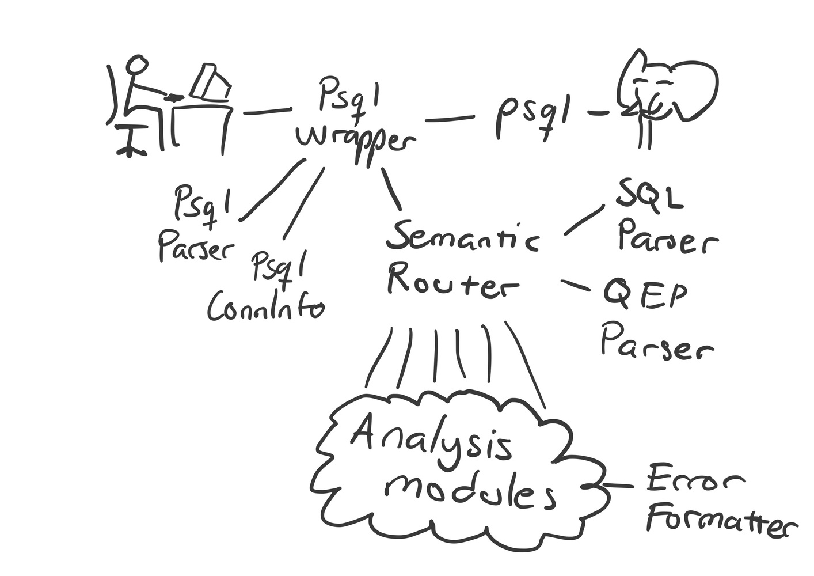

Architecture

Backend
ErrorFormatter
Unified error formatting. Each Checker class must use this to format their warning messages.
PsqlConnInfo
PsqlConnInfo fetches PostgresSQL connection info by running a psql command with given arguments (usually same arguments as with what the main psql process was called with).
QEPParser
See API docs.
SemanticRouter
Runs SQLParser, QEPParser and semantic error analysis modules (as configured) against given SQL query string.
SQLParser
Transforms sql string into a syntax tree. Also provides some utilities like finding all tables in a sql statement.
Analysis modules
CmpDomainChecker
Does analysis for suspicous comparisons between different domains. e.g., comparing columns off type VARCHAR(20) and VARCHAR(50) Returns a warning message if something was found, otherwise None.
EqWildcardChecker
Returns warning message if the sql has equals operation to a string with wild card character (the ‘%’ character), otherwise None.
ImpliedExpressionChecker
Returns warning message if implied expression is detected, otherwise None.
InconsistentExpressionChecker
Inconsistent expression is some expression that is never true. For example: x = 10 AND x = 20
This checker only finds a small subset of such expression, where postgresql itself detects the inconsistent expression in its query optimizer and exposes that information via its query execution plan.
StrangeHavingChecker
Returns warning message if there exists HAVING without a GROUP BY, otherwise None.
SubqueryOrderByChecker
Returns warning message if there exists ORDER BY in a subquery, otherwise None.
This check gives misses some situations with redundant ORDER BY but should never give false positives, only false negatives.
SubquerySelectChecker
Returns warning message if there no column SELECTed in a subquery is not used in that subquery of its own columns, otherwise returns None.
SumDistinctChecker
Returns warning message if the sql has SUM/AVG(DISTINCT …), otherwise None
Program configuration
The configuration files are read in order from: /etc/pg4n.conf then from $XDG_CONFIG_HOME/pg4n.conf, or if $XDG_CONFIG_HOME is not set, from $HOME/.config/pg4n.conf, and lastly from $PWD/pg4n.conf, with each new value introduced in latter files overriding the previous value.
Options in the configuration file are written like: “option_name value” where value may be: true, 1, yes, false, 0, no
By default all warnings are enabled. Warnings can be disabled by warning type (which can be found from every warning message’s end) e.g.
CmpDomains false
ConfigParser
Parses a configuration file.
ConfigReader
Reads all configuration files and combines their option output into a ConfigValues class.
ConfigValues
Contains option values specied in the configuration files.
Frontend
Frontend handles user’s psql session completely transparently via PsqlWrapper, although also injecting insightful messages regarding user’s semantic errors into the terminal output stream. It parses user’s SQL queries via PsqlParser for consumption in the backend.
PsqlParser
PsqlParser uses pyparsing parser combinator library to provide parsing functions for
checking for non-obvious Return presses (
output_has_magical_return)checking if given string has a new prompt (e.g
=>) (output_has_new_prompt)parsing a new prompt and everything that precedes it in a string, to allow easy message injection (
parse_new_prompt_and_rest)parsing last SQL SELECT query in a string (
parse_last_stmt)parsing
psql --versionoutput for version number (parse_psql_version)parsing syntax errors (
ERROR:..^) (parse_syntax_error)
Parsing rules common to more than 1 of these functions are listed in PsqlParser body, but otherwise rules are inside respective functions.
PsqlWrapper
PsqlWrapper is responsible for spawning and intercepting the user-interfacing psql process. pexpect library allows both spawning and intercepting the terminal control stream. pyte library keeps track of current terminal display.
Overall working logic is handled by _check_and_act_on_repl_output, where it can be seen that queries are checked for every time user presses Return. If PsqlParser finds an SQL SELECT query, it’s passed to SemanticRouter for further analysis, and any insightful message returned is saved for later. Once all query results have been printed, and a new prompt (e.g ..=> ) is going to be printed next per latest_output parameter, the wrapper injects the returned message. If results included ERROR: .. ^, it is sent to syntax error analysis, and any returned message will be injected immediately.
PsqlWrapper also checks psql version info and checks it against PsqlWrapper.supported_psql_versions.